「京すし手作割烹」位在南投草屯的太平路上。 比較大的目標隔壁是太清宮。 門口有幾組人馬在等候，莫約等了20分鐘就輪到我們。 建議如想來吃可以先訂位一下。
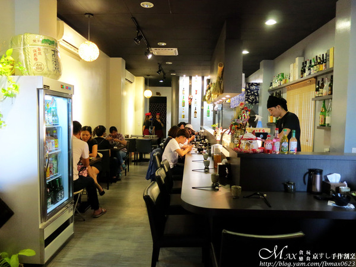推開木門，視野所看到就是全部的用餐空間。 簡約帶點日式風格，也滿有居酒屋的感覺。
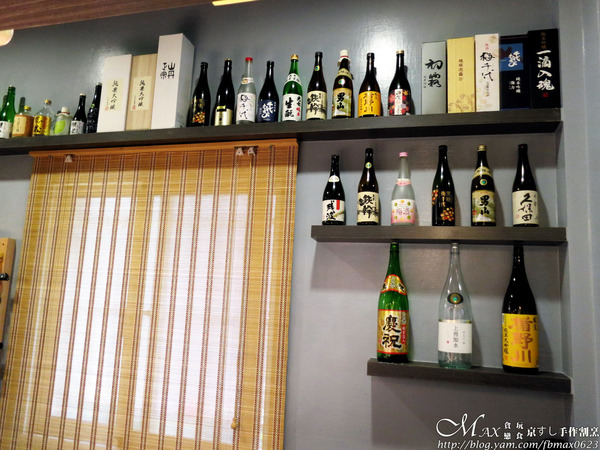 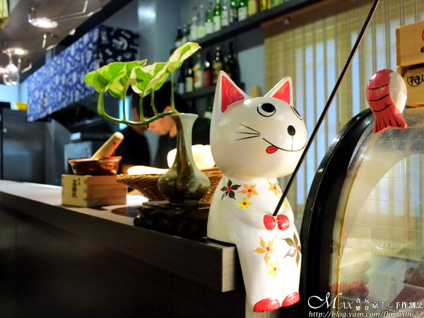牆上擺放了不少進口的日本清酒和飲品。 還發現很多貓咪的裝飾，增添一些可愛的氣息。 小地方看的出店家的用心。
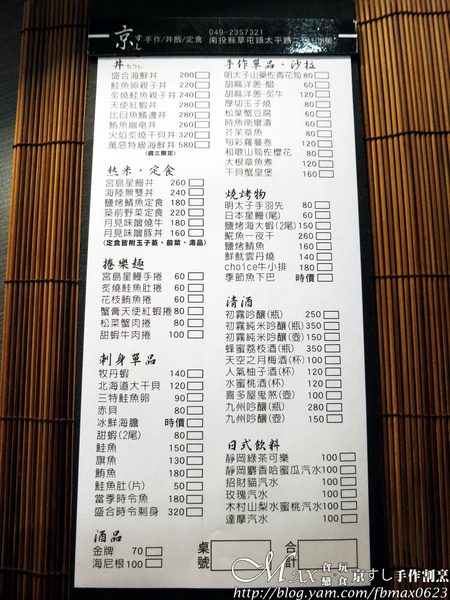接著來看看菜單，特別是用竹捲片製成。 有井飯、定食、手卷、刺身、燒烤物和酒飲等。 丼飯和定食只要160元-580元就有，價格還算平價。
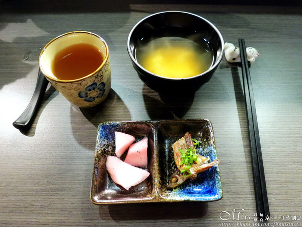每位客人皆會附上前菜。 是醃蘿蔔，是梅子的風味，魚肉鹹香味足，也不錯。 另外味噌湯湯頭香濃，可續碗，熱麥茶也是可續杯。
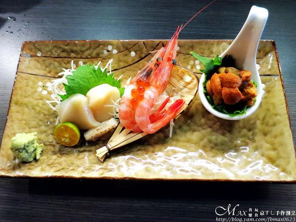由左至右分別是：北海道大干貝120元、甜蝦(2尾)80元和冰鮮海膽250元(時價) 北海道大干貝Q彈軟嫩，甜蝦口感鮮甜，肉質彈牙。 海膽是用湯匙盛裝，這一小匙居然要250元，是不便宜。 特別詢問老闆他告知是進口北海道的赤海膽，味道鮮美，愈吃會愈顯甜味。
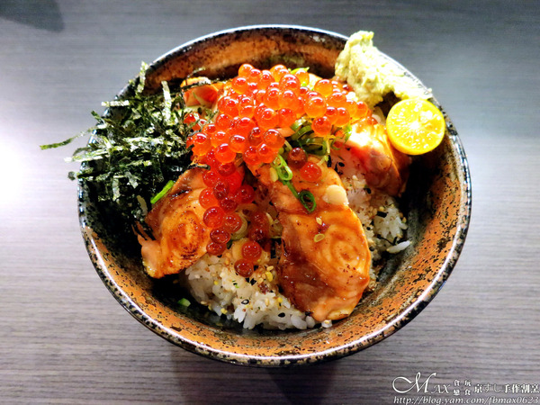底下是醋飯，上面是炙燒過的鮭魚與鮭魚卵。 每一片鮭魚炙燒後香氣迷人，十分軟嫩。 鮭魚卵晶瑩剔透的樣子，吃在嘴裡啵啵啵的好滿足。 醋飯是溫醋飯，也是第一次聽到，一般都是冷的多。 溫醋飯的滋味就少了那麼一點感覺，但醋飯很多呢！
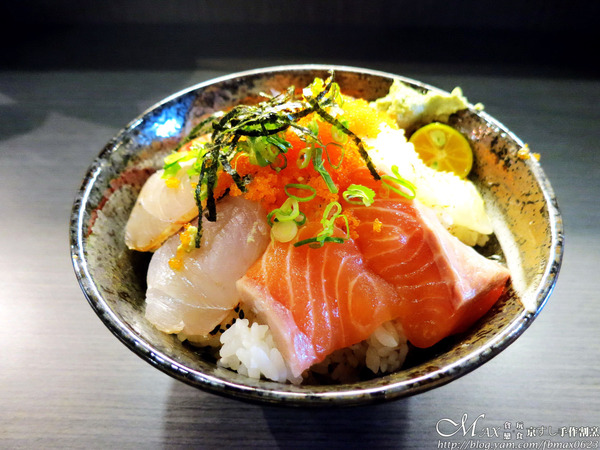醋飯已被滿滿的生魚片給覆蓋起來。 生魚片有旗魚、竹梭、海鱺和鮭魚，旁邊是花枝及蝦卵。 生魚片每一片切的厚實，哇沙米是現磨的。 搭配一起很對味，口感都不錯。 老闆有告知丼飯的生魚片不見得每次來都一樣，會看當天進的漁獲而定。
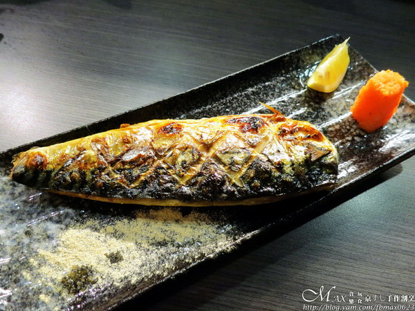鯖魚外皮烤得酥脆，魚肉細緻富含油脂。 單吃就好涮嘴，沾點胡椒可提味，相當推薦。
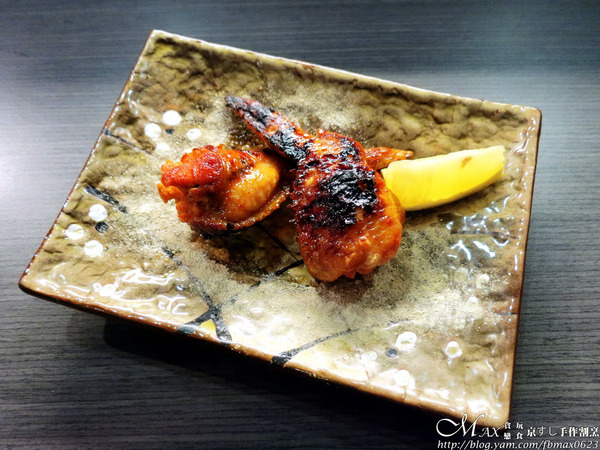第一次看手羽先會塞明太子，嚐鮮點了它。 而手羽先在日文就是雞翅。 這天來的雞翅皮外烤得有點焦，小小扣分。 雞肉嫩，咬開還吃的到鹹香明太子。 吃到後來有點油，盤子上都是油...否則是不錯吃XD
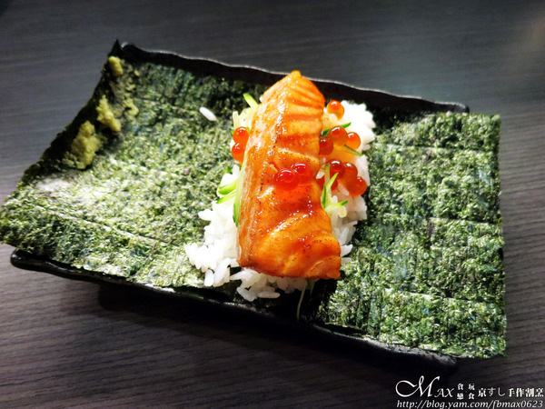 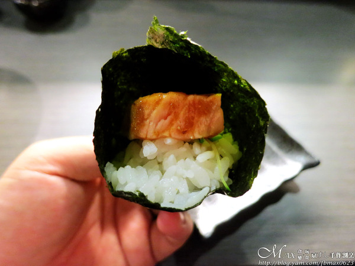海苔放了醋飯、炙燒過的鮭魚肚，點綴一些鮭魚卵。 吃的時候記的將它捲起來。 大口吃下，食材味道結合在一起，好吃！
引自:http://blog.yam.com/fbmax0623/article/115412954